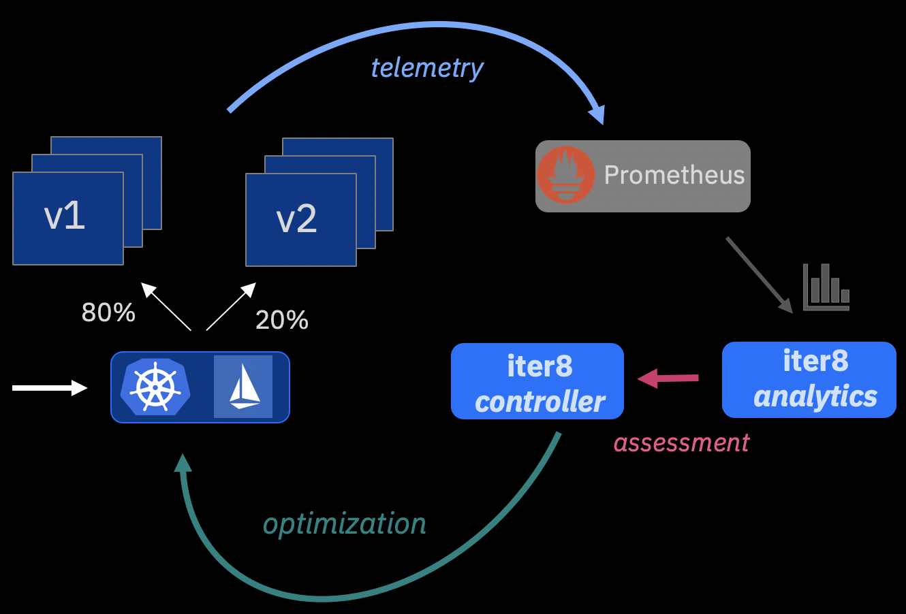
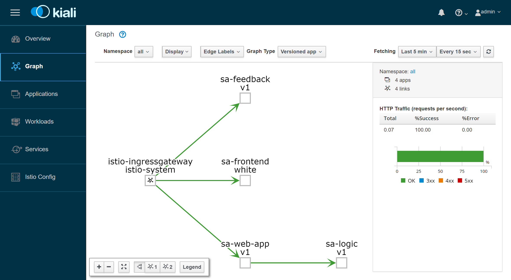
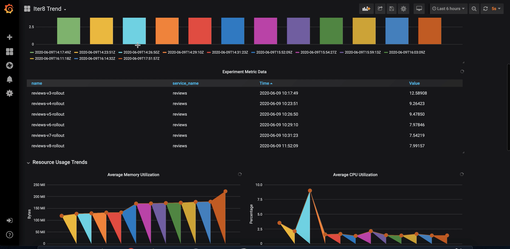

Automate Canary Releases
Use advanced statistical algorithms to assess key metrics for your service and progressively shift traffic to the winning release.

Launch Experiments Rapidly
With iter8's Kiali UI, you can create and launch canary release experiments for your service in seconds, and observe and control these experiments in real-time.

Analyze Long-term Trends
Analyze how key metrics for your service have evolved over multiple releases using iter8-trend and Grafana.